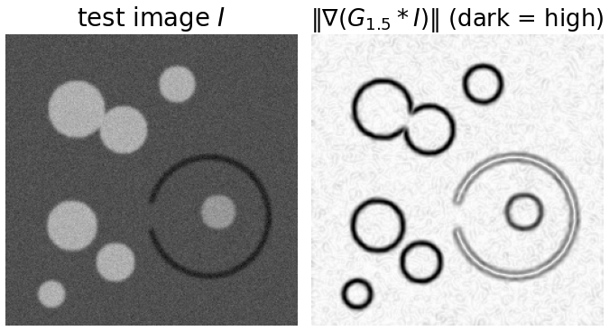
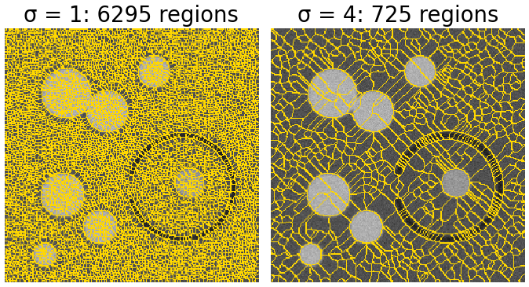
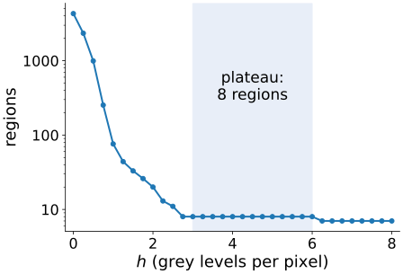
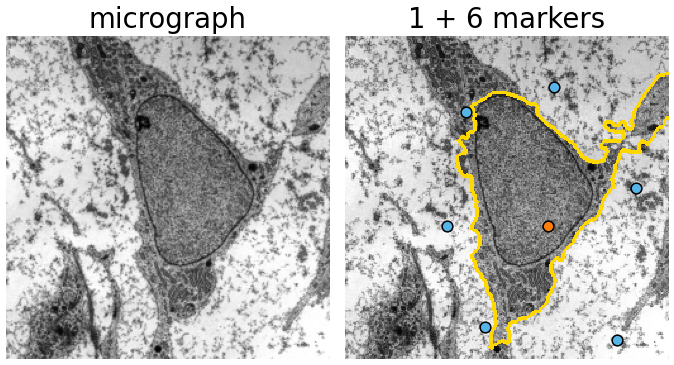

We have the picture (flood a landscape) and the algorithm (a priority queue). Now a real image: flood the gradient magnitude, so the dams fall on edges.
On the raw gradient every speck of noise is a minimum: thousands of regions.
Three cures, each with its price: smooth more, h-minima, markers.
Region merging: the watershed as a hierarchy of basins.
Where the watershed fails: leakage through a gap in an edge.
Slides titled The math give the formulas and proofs; the ideas are complete without them.
Smooth with a Gaussian of width \sigma, take the derivatives in x and y, combine: the gradient of a Gaussian (the kernels unit; Gaussian derivatives at scale \sigma: the edges day).
Inside a region of nearly constant grey level, g is small: a valley. On an edge, g is large: a ridge.
Flooding g puts one basin in every region and the dams on the edges between them. The objects do not need to be darker or brighter than the background, only different.

The watershed demo’s test image (noise sd 8) and its gradient magnitude at σ = 1.5: flat regions are valleys (light), edges are ridges (dark). The ring cell’s outline has a gap on the left.
Try it: the raw gradient
Cure 1: smooth more
Larger \sigma averages the noise away before the derivative:
\sigma
1
1.5
2
3
4
6
regional minima (test image)
6295
4299
2819
1324
725
318
Far fewer minima, but never few enough: any noise at all leaves tiny dips in a flat region; smoothing makes them shallower, not absent.
The price: edges get wider and weaker, nearby edges merge, thin structures and small objects blur away, and corners round off. The dams move.

Watershed of the test image’s gradient from every regional minimum (boundaries in yellow): 6295 regions at σ = 1, still 725 at σ = 4.
The math: edge and noise after smoothing
A step of height J, already blurred by the optics (\sigma_0), and white noise of standard deviation s:
Edge: the gradient of the Gaussian-blurred step peaks at J / \big(\sqrt{2\pi}\, \sigma_{\text{tot}}\big) with \sigma_{\text{tot}} = \sqrt{\sigma_0^2 + \sigma^2} (Gaussians add their variances).
Noise: each derivative component has variance s^2 \sum_k (\partial_x G_\sigma)_k^2 \approx s^2 / (8\pi\sigma^4), so its standard deviation falls like 1/\sigma^2.
Test image (J = 95, \sigma_0 = 1.2, s = 8): \sigma = 1.5: edge 19.7, noise about 0.9 (mean of \|\nabla\|); \sigma = 4: edge 9.1, noise 0.13. The ratio grows from 22 to 73, but the noise dips never reach depth 0.
So: smoothing sets the scale of the edges; the depth of the noise basins must be dealt with separately.
Cure 2: h-minima
Fill every basin by h first (the morphology day’s \mathrm{HMIN}_h); only minima deeper than h become markers.
h (\sigma = 1.5)
0
0.5
1
1.5
2
2.5
3 to 6
regions
4299
993
76
33
20
11
8
One parameter with a clear meaning: “a region must be separated from its neighbours by an edge at least h higher than its inside”. Units: those of the landscape (here grey levels per pixel).
The plateau from h = 3 to 6 is the sign of a good h: noise basins are shallower than 3, real regions deeper than 6.
The price: a real region with a weak edge (depth \le h) is merged with its neighbour.

Number of regions against h on the test image (σ = 1.5, log scale): a steep fall from 4299, then a plateau of 8 regions from h = 3 to 6.
The math: what h removes
Depth (dynamic) of a regional minimum m: \mathrm{dyn}(m) = \min_{\text{paths } m \to \text{deeper minimum}} \max_{\text{path}} g \; - \; g(m): how far the water must rise in m’s basin before it overflows into a deeper one.
The regional minima of \mathrm{HMIN}_h(g) are exactly the minima of g with \mathrm{dyn} > h (morphology day); the deepest minimum always survives.
Scaling: \mathrm{dyn} is a difference of heights, so it scales with the landscape: multiply g by c and the right h becomes ch. A strictly increasing transform of g leaves the flooding unchanged but not the h-minima.
Ordering all minima by dynamic and removing them one by one gives a nested family of segmentations: the hierarchy on the region-merging slide.
Try it: h-minima
Cure 3: marker-controlled watershed
Decide the markers first, then flood from them only.
One marker per object (and one for the background): the markers decide how many regions; the flooding decides where the boundaries go.
Markers from: user clicks, a threshold of the image, the peaks of another image (the distance transform, next unit), detections.
Equivalent formulation: minima imposition (the morphology day) makes the markers the only minima of g and fills every other basin up to its pass; flooding that image from its minima gives the same boundaries.
This is the usual way the watershed is used in practice: markers from a robust, coarse step; boundaries from the watershed.
The math: imposition and flooding from markers agree
Let M be the markers and g^M the imposed landscape: g^M = R^\varepsilon_{\min(g + 1, f_M)}(f_M), with f_M = 0 on M and \max g + 1 elsewhere (the morphology day).
For every pixel p \notin M: g^M(p) = 1 + d(p), where d(p) = \min_{\text{paths } M \to p} \max_{\text{path}} g is the minimax distance from the markers (reconstruction by erosion computes exactly such minimax values).
Flooding g from M pops the pixels in order of d (previous unit). Flooding g^M from its minima (= M): along the best path to p every pixel q has d(q) \le d(p), so the minimax distance in g^M is 1 + d(p): the same order.
Hence the same labels (up to ties). Imposition is useful when a later step needs the landscape itself; the flooding never needs it.
Try it: one marker per object
Region merging: a hierarchy
Start from the oversegmentation (every minimum a region), then merge neighbouring regions across their lowest dam, one at a time.
Each merge removes the least significant boundary. The sequence of merges is a tree (a dendrogram) of regions: a hierarchical watershed.
Cutting the tree at a dam height t gives a segmentation; cutting it by dynamics gives exactly the h-minima result. Other criteria (area, volume of the basin) give other cuts of the same tree.
A 1D landscape with six minima a–f and the pass heights between them (top), and the merge tree (bottom): neighbouring basins join at the height of their pass, lowest first. Cutting the tree at 6.5 leaves three regions: ab, cd and ef.
Leakage: a gap in an edge
A dam is only as strong as the lowest point on the ridge around a basin. If the edge has a gap, the lowest pass is in the gap, and two regions merge or meet there at a low level.
With markers on both sides, the boundary across the gap is wherever the two lakes happen to meet: anywhere inside the gap, or far from it, since both lakes flood the flat insides at the same low level.
Typical in microscopy: a faint membrane, a touching cell with the same intensity.
What helps: closing the gap first (closing, the morphology day), a better landscape, more markers; or a method that penalises long boundaries: graph cuts (the graph-cut day; “markers” here, “seeds” there) or level sets. Why the watershed leaks and the others do not, on the same seeds: day 29.

The demo’s micrograph preset: one nucleus marker (orange) and six background markers (blue), flooding the gradient at σ = 2. The boundary (yellow) follows the nuclear envelope on the left and leaks out at the bottom and top right. Micrograph: transmission electron micrograph of a mesenchymal stem cell, Robert M. Hunt, CC BY 3.0, via Wikimedia Commons.
Try it: leakage
Choosing the landscape
landscape
valleys
use when
gradient magnitude
flat regions
regions differ in grey level; boundaries are edges
intensity
dark parts
dark objects, separated by brighter lines
inverted intensity
bright parts
bright objects; every basin also gets the background around its object (restrict with a mask)
-distance transform
centres of objects
touching objects of the same intensity (next unit)
Combinations are common: markers from one image, flooding on another.
Summary
Flood \|\nabla (G_\sigma * I)\|: one basin per region of nearly constant grey level, dams on edges.
Raw: thousands of noise minima, oversegmentation.
Smoothing reduces the minima but never removes them, and moves edges. h-minima keep minima deeper than h: one interpretable parameter. Markers fix the number of regions; the flooding places the boundaries.
Merging regions across low dams gives a hierarchy; h-minima is one cut of it.
The watershed leaks through gaps in edges; touching objects of equal intensity have no edge between them: the next unit uses the distance transform.